This guide provides a step-by-step walkthrough for building, signing, and flashing firmware for the PIC32CX SG41 platform using keySTREAM signing, without requiring the TPDS package.
Note: This flow is self-contained. The only cloud call is a single
POST /signto keySTREAM per firmware component. No TPDS backend or TPDS Python package is required.Note: Ensure MPLAB X IDE is installed before proceeding. It provides the
ipecmdprogrammer utility used in Step 5.
| Item | Details |
|---|---|
| Example | SG41 FOTA without TPDS |
| Board | PIC32CX SG41 (EV89U05A) + ATECC608 |
| Network | Wi-Fi (WINCS02) |
| Required Config | Wi-Fi SSID, Wi-Fi Password, keySTREAM Fleet_uid, keySTREAM_API_Token, keySTREAM_Signingkey |
| Step 1 | Fill Wi-Fi credentials and keySTREAM fields in mchp_non_tpds_fota_config.ini |
| Step 2 | Run python mchp_non_tpds_fota.py to validate configuration and generate App_Config.h |
| Step 3 | Compile Bootloader (keystream_boot) and KTA FOTA Application (keystream_Fota) in MPLAB X |
| Step 4 | Run python mchp_non_tpds_fota.py again to sign the compiled binaries |
| Step 5 | Flash the signed image to the board (prompted by the script, or manually) |
Overview quick links:
The flow involves two firmware components:
keystream_boot) — verifies the application signature using the ATECC608 secure element before booting.keystream_Fota) — connects to Wi-Fi, downloads the new firmware image from keySTREAM, and writes it to the passive flash bank.The host-side Python script (mchp_non_tpds_fota.py) validates configuration, generates the application header, orchestrates offline signing, and optionally flashes the board.
| Requirement | Details |
|---|---|
| Python | 3.9 or later |
| Python packages | requests, cryptography, intelhex, pyyaml |
| MPLAB X IDE | v6.00 or later (provides ipecmd for flashing) |
| Hardware | PIC32CX SG41 evaluation board (EV89U05A) with ATECC608 |
| keySTREAM account | Valid Fleet_uid and keySTREAM_API_Token |
Install Python dependencies:
Open mchp_non_tpds_fota_config.ini and fill in all required fields before running the script.
All configuration — Wi-Fi credentials, keySTREAM API details, and component hex file names — is provided in a single .ini file.
Field Descriptions
| Field | Section | Description |
|---|---|---|
Fleet_uid | [keystream] | Fleet Profile Public UID — found on the keySTREAM portal. |
keySTREAM_API_Token | [keystream] | Base64-encoded API key (with or without Basic prefix). |
keySTREAM_Signingkey | [keystream] | Name of the ECDSA P-256 signing key pair registered in keySTREAM. |
ssid | [wifi] | Wi-Fi network name. Written into App_Config.h automatically by the script. |
password | [wifi] | Wi-Fi password. Written into App_Config.h automatically by the script. |
comp_1_file | [components] | Bootloader hex filename (resolved from the same folder as this .ini). |
comp_1_info | [components] | Flash address of the firmware_metadata_t struct in the bootloader hex. |
comp_2_file | [components] | KTA FOTA application hex filename. |
comp_2_info | [components] | Flash address of the firmware_metadata_t struct in the application hex. |
output_dir | [output] | Folder for signed .hex, .bin, and combined_component.hex output files. |
Important: The script validates all fields on startup and aborts with a clear message if any field is empty or contains a placeholder value (e.g.
XYZ,WiFi-SSID,XXXX). Replace every placeholder with a real value before proceeding.
keySTREAM Portal — Fleet Profile UID and Signing Key Name
Use the keySTREAM portal to locate the Fleet_uid (Fleet Profile Public UID) and keySTREAM_Signingkey (Signing Key Name).
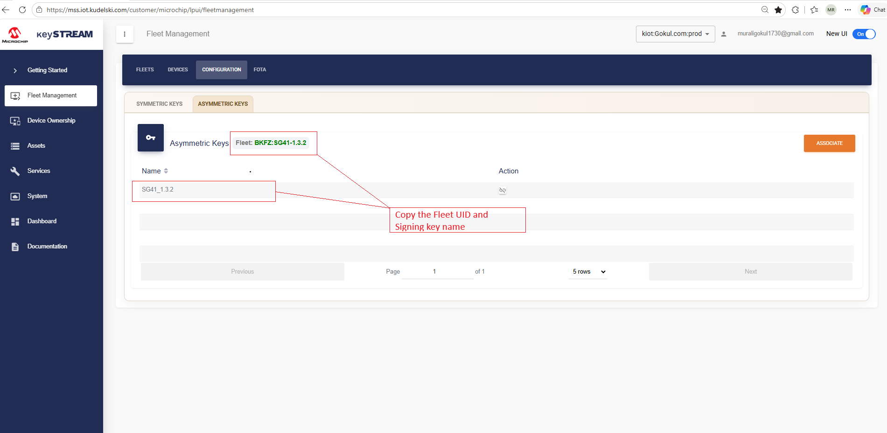
keySTREAM Portal — API Key Token
Use the keySTREAM portal to generate or copy the keySTREAM_API_Token (API Key Token).
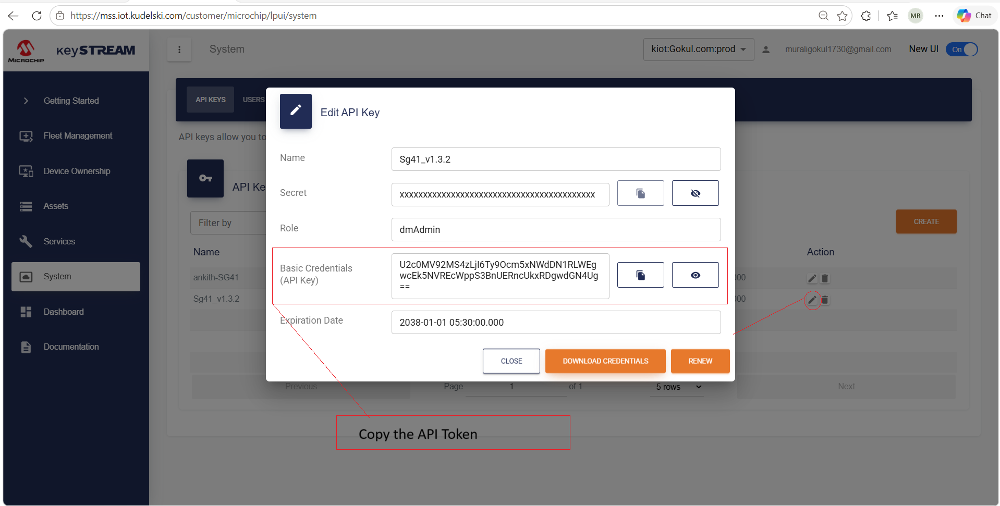
Run the script once to validate the configuration and generate App_Config.h:
The script performs the following on this first run:
mchp_non_tpds_fota_config.ini — aborts if any value is empty or a placeholder.App_Config.h with the Wi-Fi credentials and Fleet Profile UID from the .ini file. | Location | Used by |
|---|---|
SG41_X/App_Config.h | configuration.h (#include "../../../../../App_Config.h") |
SG41_X/keystream_connect/App_Config.h | ktaConfig.h (#include "../../../../../../../../App_Config.h") |
This is expected behaviour.
App_Config.hhas been successfully generated. Proceed to Step 3 to compile the firmware.
Note: If you update any value in
mchp_non_tpds_fota_config.iniafter compiling, re-run the script. It will regenerateApp_Config.hand require recompilation before signing.
With App_Config.h now in place, open MPLAB X IDE and build both projects.
| Item | Details |
|---|---|
| Project path | keystream_connect/keystream_boot/keystream_boot.X/ |
| Configuration | default |
| Output hex | keystream_connect/keystream_boot/keystream_boot.X/dist/default/production/keystream_boot.X.production.hex |
Open the project in MPLAB X IDE and perform a Clean and Build in the default configuration.
Bootloader Behaviour
On every reset the bootloader runs the following sequence:
PROVISIONED or CON_REQ and Slot 14 key present) — compute SHA-256 over the application image and verify the ECDSA signature against the Slot 14 public key.NVMCTRL_BankSwap() to switch to the passive flash bank and reset. If the passive bank also has no valid image, halt.Note: Signature verification uses
atcab_verify_extern(raw 64-byte X‖Y public key) because Slot 14 is written with the raw key format during provisioning, not the padded ECC-slot format expected byatcab_verify_stored.
| Item | Details |
|---|---|
| Project path | keystream_connect/keystream_fota/keystream_Fota.X/ |
| Configuration | default |
| Output hex | keystream_connect/keystream_fota/keystream_Fota.X/dist/default/production/keystream_Fota.X.production.hex |
Open the project in MPLAB X IDE and perform a Clean and Build in the default configuration.
The KTA FOTA application performs the following after boot:
App_Config.h.Note: Copy the compiled
.hexfiles to the same folder asmchp_non_tpds_fota_config.iniafter building, or updatecomp_1_file/comp_2_filein the.iniwith the paths to the dist output files.
Run the script again after compilation is complete:
The script performs the following:
App_Config.h is up-to-date — skips regeneration if values are unchanged.App_Config.h — proceeds to signing.signed_out/ are already newer than the input HEX files. If so, signing is skipped and the script proceeds directly to the flash prompt.For each component (Bootloader + KTA FOTA Application):
| Step | Action |
|---|---|
| 1 | Load the input .hex file (IntelHex). |
| 2 | Read the firmware_metadata_t struct at comp_X_info — extracts image_address, image_size, signature_address. |
| 3 | Compute SHA-256 digest over the firmware image bytes. |
| 4 | POST /sign {digest: [32 ints]} → keySTREAM returns rawSignature (64 bytes, r‖s). |
| 5 | Patch the 64-byte signature into the hex at signature_address. |
| 6 | Write <name>_<version>.hex and <name>_<version>.bin to signed_out/. |
After both components are signed, the script merges the two signed hex files into combined_component.hex / combined_component.bin (Bank 2-shifted at offset 0x00080000).
Note: No host-side signature verification is performed. Verification is exclusively the bootloader's responsibility using the ATECC608 Slot 14 public key.
Note: Re-signing is triggered only when a new build produces HEX files with a timestamp newer than the existing
signed_out/combined_component.hex. If no changes are made to the firmware, the script skips Phase A and proceeds to the flash prompt.
After signing (or when signed outputs are already current), the script prompts:
| Choice | Behaviour |
|---|---|
1 YES | Auto-detects the connected programmer (nEDBG / PKoB 4) via USB, locates ipecmd.exe from any installed MPLAB X version, and runs java -jar ipecmd.jar -P<MCU> -TP<Programmer> -OL -OK -M -F<combined_component.hex>. If a Device Family Pack is missing (exit code 36), it is auto-installed and the flash command is retried. |
2 NO | Exits. Signed files remain in signed_out/ for manual flashing. |
Note: Ensure the board is connected via USB before selecting
YES. If the board is not detected, the script prints an error and exits. Re-run the script after connecting the board — signing will be skipped and the flash prompt will be shown immediately.
Open app_wincs02.h and update the application version to 1.2.1.
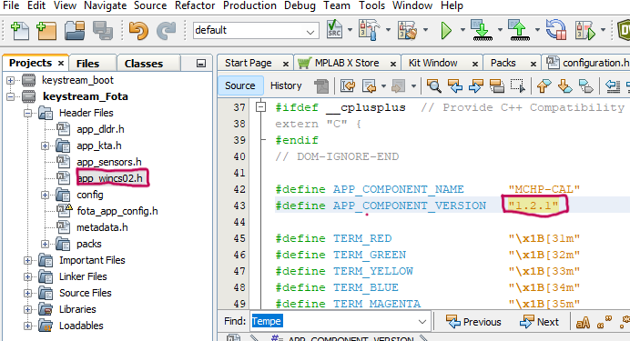
After saving the file, perform a Clean and Build in MPLAB X, then re-run the signing script:
Note: At this stage, enter
2(NO) to skip flashing. The signed binary insigned_out/will be uploaded to the keySTREAM portal in the FOTA campaign steps below.
In the keySTREAM portal, navigate to Assets → Firmware, then select your component.
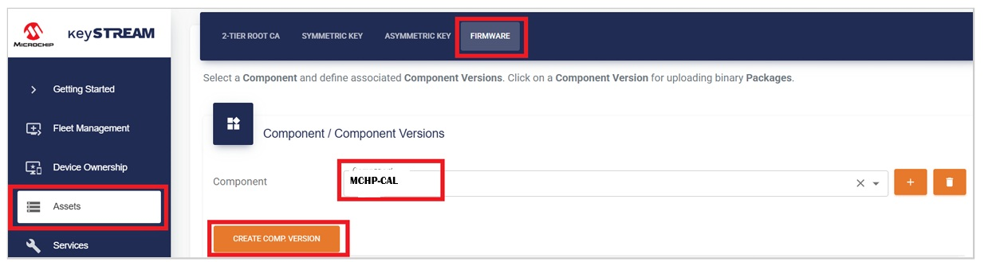
Note: If no components are listed in the dropdown, click CREATE COMPONENT and enter
MCHP-CALas the name. This name is fixed for this use case.
Click CREATE COMP. VERSION, enter 1.2.1, and press Commit.
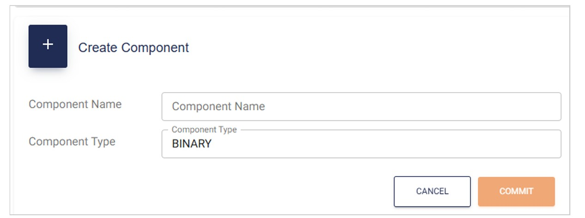
Under the Packages column, click the paperclip icon for version 1.2.1. In the panel that appears, click ADD PACKAGE.
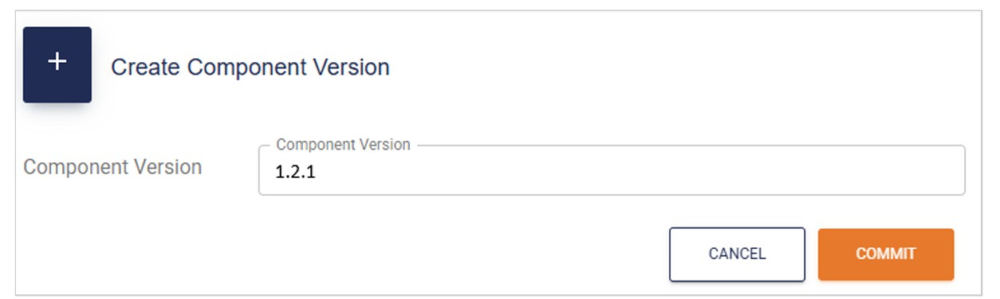
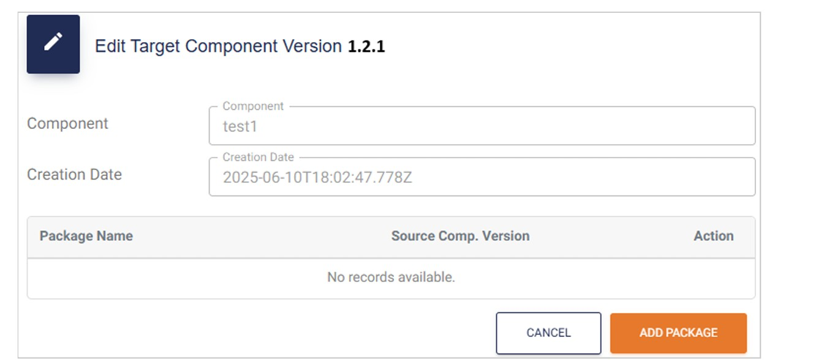
Upload the updated firmware image MCHP-CAL_1.2.1.bin. Leave the Source Component Version field blank unless you want the update to apply only to devices running a specific existing firmware version. Once complete, click COMMIT.
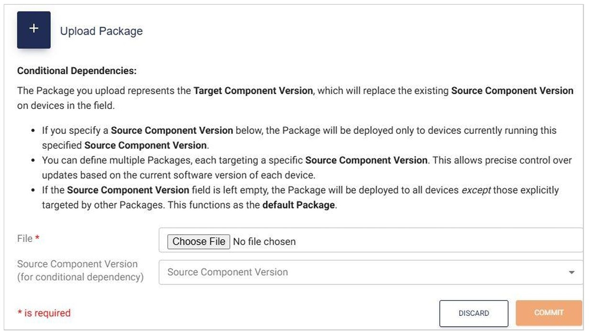
Navigate to Fleet Management and select your fleet.
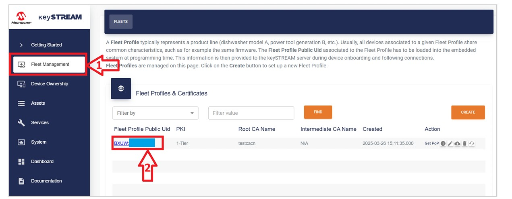
Verify that the MCHP-CAL component is associated with your fleet profile. If it is not, click the Associate button.
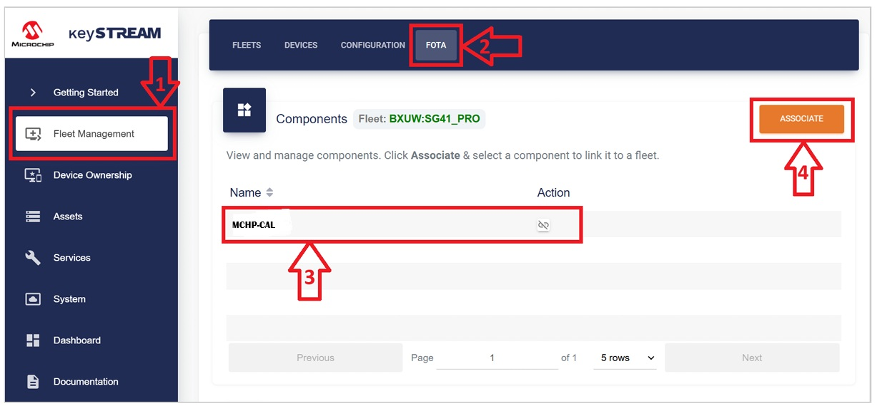
Click Create Campaign and press Commit to launch.
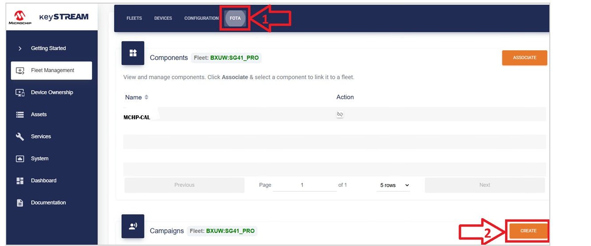
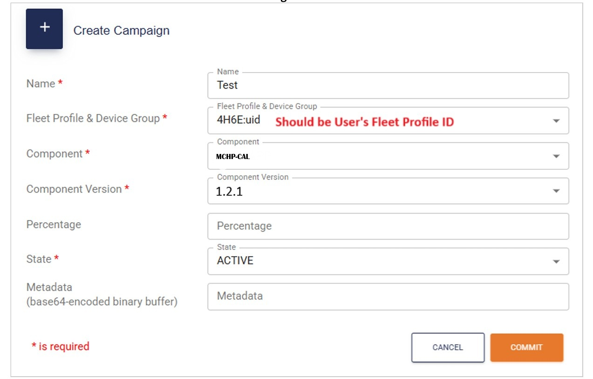
Note: The percentage field controls what proportion of devices in the fleet will receive the update. It is good practice to start with a small percentage, validate the update, and then progressively increase the rollout. For this use case, the field may be left blank.
Once committed, keySTREAM initiates the firmware over-the-air update.
Monitor the update progress in TeraTerm. The bootloader output will display the MCHP-CAL component name and the target version being downloaded (1.2.1).
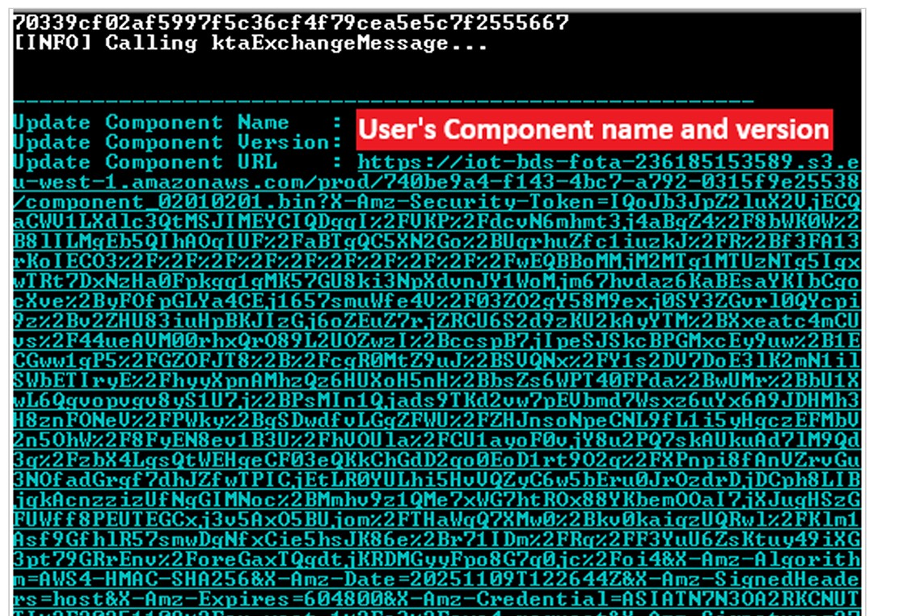
| File | Description |
|---|---|
SG41_X/App_Config.h | Auto-generated header with Wi-Fi credentials and Fleet Profile UID (satisfies configuration.h include). |
SG41_X/keystream_connect/App_Config.h | Same generated header copied to keystream_connect/ (satisfies ktaConfig.h include). |
signed_out/<name>_<ver>.hex | Individually signed component hex. |
signed_out/<name>_<ver>.bin | Individually signed component binary. |
signed_out/combined_component.hex | Merged, Bank-2-shifted hex — this is what gets flashed to the board. |
signed_out/combined_component.bin | Merged binary. |
| Symptom | Likely Cause | Resolution |
|---|---|---|
Invalid or placeholder configuration values — signing aborted | One or more fields in .ini still contain a placeholder (e.g. XYZ, WiFi-SSID, XXXX) | Replace all placeholder values with real credentials in mchp_non_tpds_fota_config.ini. |
Connection failed — check Fleet_uid and keySTREAM_API_Token | Wrong credentials in .ini | Verify Fleet_uid and keySTREAM_API_Token on the keySTREAM portal. |
HEX files are out-of-date with App_Config.h / file not found | HEX files are missing or were compiled before the latest App_Config.h | Build (or rebuild) the listed project(s) in MPLAB X, then re-run the script. |
fatal error: ../../../../../App_Config.h: No such file or directory (MPLAB X build error) | App_Config.h has not been generated yet | Run python mchp_non_tpds_fota.py first (Step 2) to generate App_Config.h before compiling. |
ipecmd.exe not found | MPLAB X not installed or not on PATH | Install MPLAB X or add ipecmd to PATH. |
no Microchip programmer … connected via USB | Board not plugged in when flashing was selected | Connect the board via USB and re-run the script. Signing is skipped and the flash prompt is shown directly. |
DFP missing (exit code 36) | Device Family Pack not installed | Script auto-installs; or open MPLAB X → Tools → Packs. |
App Signature address is invalid | Wrong comp_X_info address in .ini | Check metadata.c in the firmware project for the correct address. |
| Bootloader boots without verifying | Device not provisioned or Slot 14 empty | Provision the device via keySTREAM before expecting signature checks. |
| Bootloader performs bank swap | Signature mismatch | Ensure the correct signing key is used and the hex was not modified after signing. |